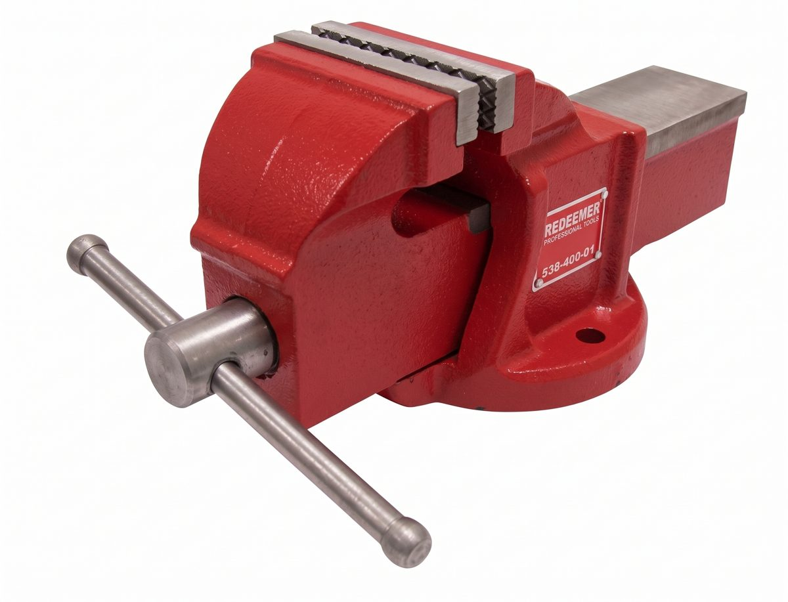
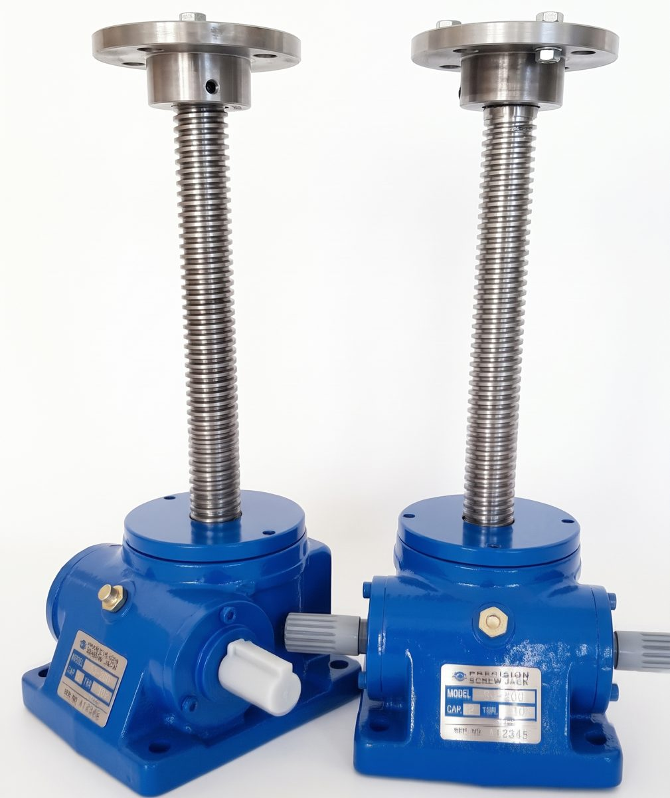
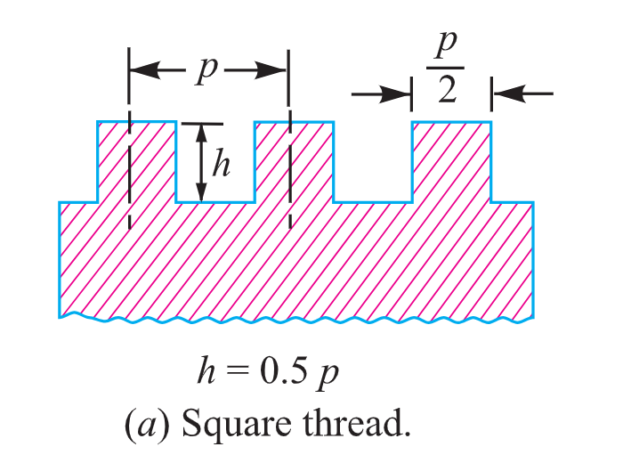
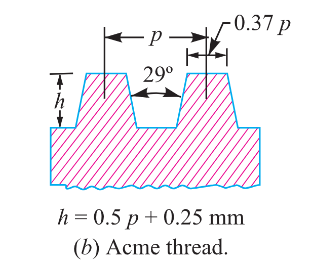
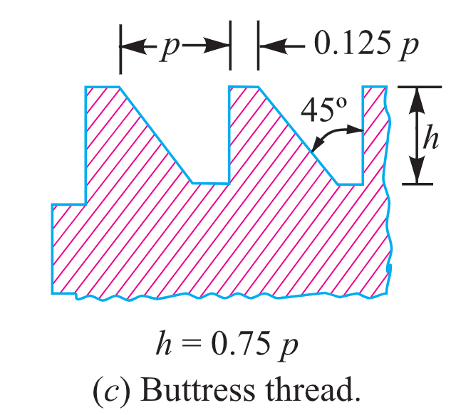
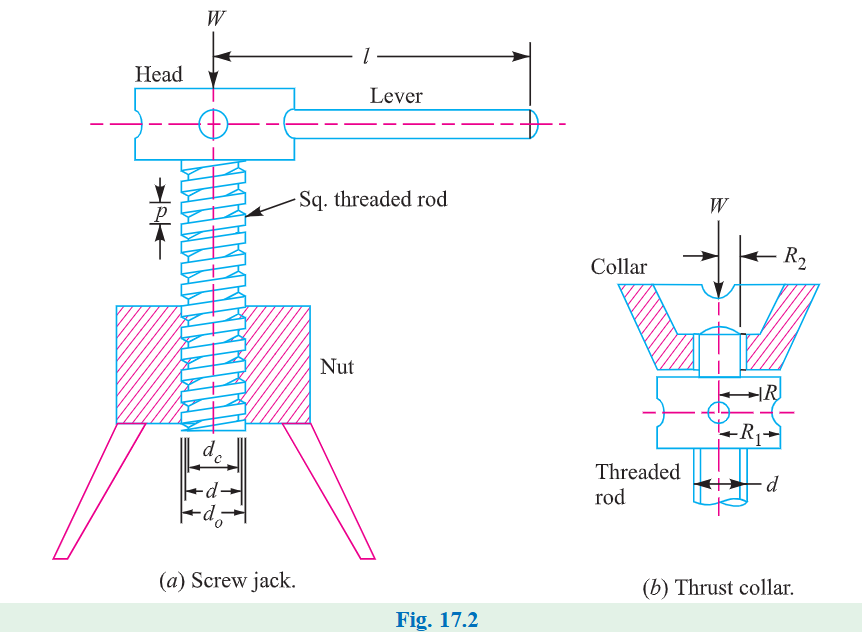
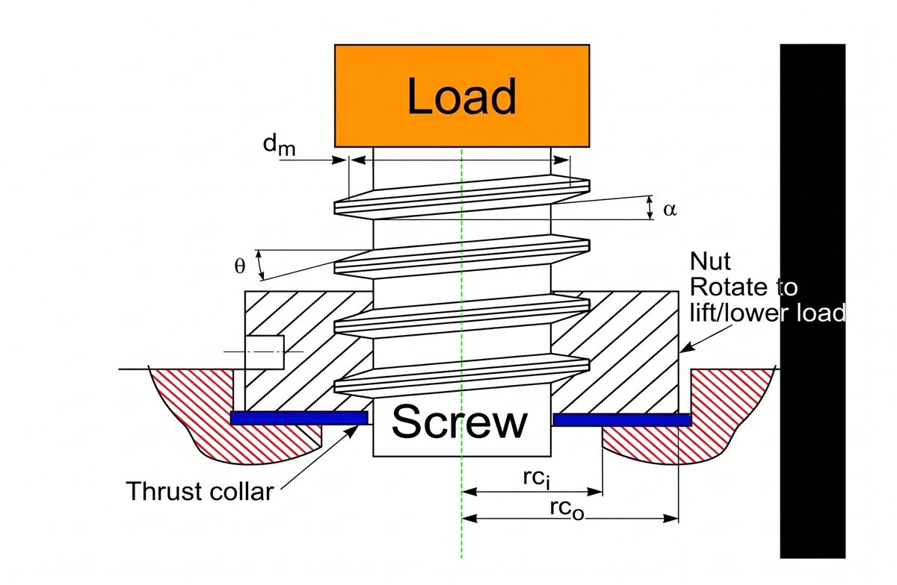
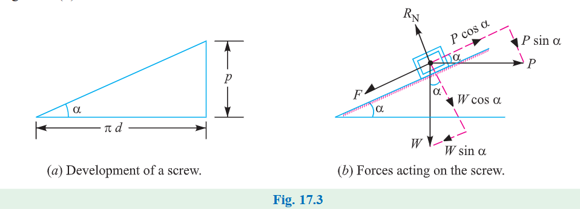
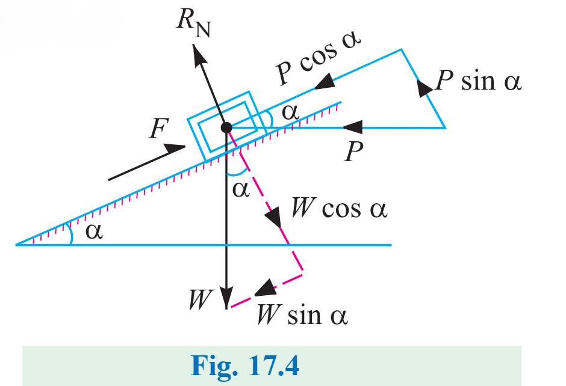
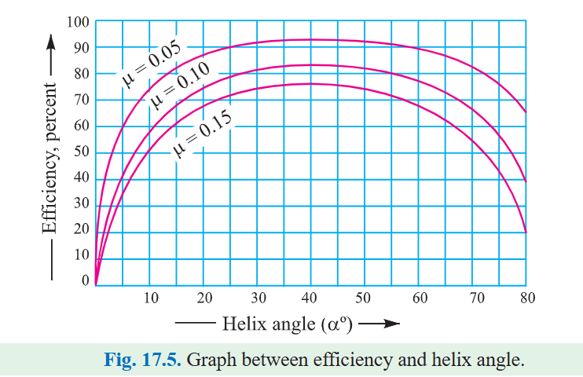

Introduction
الـ Power screws (وبتتسمى كمان translation screws) بتُستخدم علشان تحوّل الحركة الدورانية (rotary motion) إلى حركة انتقالية (translatory motion) — أفقية أو رأسية.
الفكرة ببساطة: عندك rotation من إيدك أو موتور، وعايز linear force كبيرة. مثال screw jack (كوريك رفع العربية): قوة صغيرة بتتطبق في المستوى الأفقي بتقدر ترفع أو تنزل load كبير جدًا. وفي lead screw بتاع المخرطة، الحركة الدورانية موجودة لكن الـ tool لازم يتقدم في اتجاه القطع ضد مقاومة المعدن.
الـ Power screws بتُستخدم كمان في: vices (مناجل)، testing machines (آلات الاختبار)، presses (مكابس).


Three possible arrangements
في أغلب الـ power screws الـ nut بيتحرك axially ضد القوة المقاومة والـ screw بيلف في الـ bearings. لكن فيه ترتيبات تانية:
| # | Screw | Nut |
|---|---|---|
| (i) | Rotates في الـ bearings | بيتحرك axially |
| (ii) | بيلف و بيتحرك axially | Stationary (ثابت) |
| (iii) | بيتحرك axially من غير لف | بيلف (rotates) |
Types of Screw Threads
فيه ثلاث أنواع من الـ threads بتتستخدم أكتر حاجة في الـ power screws. في الرسومات، p = pitch (المسافة بين ثريدين) و h = depth of thread (عمق السن).
1 · Square Thread

مناسب لنقل القدرة في أي اتجاه (either direction). بيدي maximum efficiency وأقل radial (bursting) pressure على الـ nut.
- العيب: صعب يتقطع بالـ taps and dies، فبيتعمل على lathe بـ single point tool.
- ما ينفعش يتعوّض بسهولة عن الـ wear (cannot be easily compensated for wear).
- الاستخدام: screw jacks, presses, clamping devices.
2 · Acme (Trapezoidal) Thread

تعديل على الـ square thread. الجانبين ليهم ميل بسيط (زاوية 29°). بيتقطع بالـ dies فـ أسهل في التصنيع من الـ square.
- الميل بيقلل الـ efficiency شوية عن الـ square.
- بيضيف bursting pressure على الـ nut، لكن بيزوّد مساحة الـ shear (area in shear).
- بيتستخدم لما نحتاج split nut ولما نحتاج نعوّض الـ wear بـ adjustable split nut — زي lead screw بتاع المخرطة.
3 · Buttress Thread

بيُستخدم لما القوى الكبيرة بتشتغل في اتجاه واحد بس على طول محور الـ screw. أحد الجانبين رأسي تمامًا والتاني مائل 45°.
- بيجمع كفاءة الـ square العالية + سهولة القطع بتاعة الـ acme.
- أقوى من باقي الأنواع بسبب greater thickness at the base.
- استخدامه محدود في نقل القدرة؛ بيُستخدم في light jack screws and vices.
| Thread | Depth h | Crest width | Angle |
|---|---|---|---|
| Square | 0.5 p | p / 2 | — |
| Acme | 0.5 p + 0.25 mm | 0.37 p | 29° |
| Buttress | 0.75 p | 0.125 p | 45° (flank) |
في السلايد المعادلة مكتوبة h = 0.5p + 0.25 بدون وحدة، لكن الرسم الأصلي (والمرجع) بيوضح إن الـ 0.25 بالـ mm. عشان كده كتبناها بالوحدة.
Torque to Raise the Load
الـ screw jack بيتحط عليه الـ load فوق راس الـ square threaded rod، والـ rod بيلف بقوة بتتطبق على آخر lever لرفع أو تنزيل الحمل.


The key idea — unwinding one thread turn
تخيّل إنك فكّيت لفّة واحدة من الـ thread وفرّدتها على مستوى. هتطلع لك inclined plane (مستوى مائل). ومن هنا كل التحليل بيتحوّل لمسألة block على مستوى مائل — نفس مبدأ الـ screw jack بالظبط.

Notation
| Symbol | Meaning |
|---|---|
| \(p\) | Pitch of the screw |
| \(d\) | Mean diameter of the screw |
| \(\alpha\) | Helix angle |
| \(P\) | Effort applied at the circumference of the screw to lift the load |
| \(W\) | Load to be lifted |
| \(\mu = \tan\phi\) | Coefficient of friction between screw and nut (\(\phi\) = friction angle) |
من هندسة الشكل (المثلث القائم — القاعدة = محيط الـ mean circle πd والارتفاع = p):
لأن مبدأ الـ screw jack زي الـ inclined plane، فالقوة على المحيط بنعتبرها أفقية. ولأن الحمل بيتـرفع، الـ friction force F = μRN بتشتغل لتحت (بتقاوم الحركة لفوق).
Equilibrium equations
(1) بالتحليل موازي للمستوى (along the plane):
(2) بالتحليل عمودي على المستوى (perpendicular):
Derivation of \(P\)
بنعوّض عن RN من (2) في (1):
دلوقتي بنعوّض μ = tan φ ونضرب البسط والمقام في cos φ:
Torque to overcome screw–nut friction
لو α > φ (في حالة الـ lowering) بتبقى P = W·tan(α − φ). هنرجع لها في قسم الـ overhauling.
الـ tan(α+φ) معناه إن الـ effort محتاج يتغلّب على حاجتين: الميل الهندسي (α) اللي بيرفع الحمل، + الاحتكاك (φ) اللي بيقاوم. لو الاحتكاك صفر (φ = 0) بيرجع P = W tan α — الحالة المثالية (ideal).
Thrust Collar & Total Torque
لما الـ axial load بيتشال بواسطة thrust collar بحيث إن الحمل ما بيلفّش مع الـ screw، بيبقى فيه احتكاك إضافي عند الـ collar محتاج torque تاني للتغلب عليه، نسميه T2.
| Symbol | Meaning |
|---|---|
| \(R_1,\ R_2\) | Outside and inside radii of collar |
| \(R = \dfrac{R_1+R_2}{2}\) | Mean radius of collar |
| \(\mu_1\) | Coefficient of friction for the collar |
فيه معاملين احتكاك مختلفين: μ = tan φ بين الـ screw والـ nut، و μ₁ عند الـ collar. ما تخلطش بينهم! وكمان T₂ بيظهر بس لو الحمل مش بيلف مع الـ screw.
Total torque
لو اتطبق effort P₁ عند نهاية الـ lever بطول l، فالـ torque الكلي المطلوب للتغلب على الاحتكاك لازم يساوي الـ torque المطبق عند نهاية الـ lever:
Mean diameter
لو اتدّى nominal (outside) diameter do و core (root) diameter dc:
Mechanical Advantage
الـ M.A. = نسبة الحمل المرفوع W إلى الـ effort P₁ عند نهاية الـ lever:
الـ M.A. بيزيد لو زوّدنا طول الـ lever l — علشان كده الكوريك بيبقى ليه ذراع طويل. وبيقل لو زاد الاحتكاك (φ أكبر).
Torque to Lower the Load
لما الحمل بيتـنزّل، الـ friction force F = μRN بتشتغل لفوق (عكس حالة الرفع). ده اللي بيغيّر الإشارة في المعادلات.

(1) موازي للمستوى:
(2) عمودي على المستوى:
Derivation
بالتعويض μ = tan φ وضرب البسط والمقام في cos φ:
| Case | Friction acts | Effort |
|---|---|---|
| Raising the load | لتحت (down the plane) | \(P = W\tan(\alpha+\phi)\) |
| Lowering the load | لفوق (up the plane) | \(P = W\tan(\phi-\alpha)\) |
Coefficient of Friction
- Material of screw and nut
- Workmanship in cutting screw
- Quality of lubrication
- Unit bearing pressure
- Rubbing speeds
قيمة الـ μ ما بتتغيرش كتير مع اختلاف الـ material أو الـ load أو السرعة — إلا في حالة الـ starting. مع good lubrication و average workmanship ممكن نفترضها بين 0.10 و 0.15. (الـ screw عادةً steel والـ nut من cast iron / gun metal / phosphor bronze لتقليل الـ wear.)
| S.No. | Condition | Starting | Running |
|---|---|---|---|
| 1 | High grade materials and workmanship and best running conditions | 0.14 | 0.10 |
| 2 | Average quality of materials and workmanship and average running conditions | 0.18 | 0.13 |
| 3 | Poor workmanship or very slow and infrequent motion with indifferent lubrication or newly machined surface | 0.21 | 0.15 |
وإذا استُخدمت thrust collars تُؤخذ القيم من الجدول التالي:
| S.No. | Materials | Starting | Running |
|---|---|---|---|
| 1 | Soft steel on cast iron | 0.17 | 0.12 |
| 2 | Hardened steel on cast iron | 0.15 | 0.09 |
| 3 | Soft steel on bronze | 0.10 | 0.08 |
| 4 | Hardened steel on bronze | 0.08 | 0.06 |
في كل الحالات في الجدولين، الـ starting friction أعلى من الـ running friction. يعني أول لحظة تحريك دايمًا أصعب من الاستمرار في الحركة.
Efficiency of Square Threaded Screws
الـ efficiency = النسبة بين الـ ideal effort (الجهد المطلوب لتحريك الحمل بدون احتكاك) والـ actual effort (الجهد المطلوب مع الاحتكاك).
عرفنا إن: P = W·tan(α+φ) حيث W الحمل، α الـ helix angle، φ الـ friction angle، و μ = tan φ.
لو مفيش احتكاك بين الـ screw والـ nut فـ φ = 0، والـ effort المثالي:
الـ efficiency هنا مستقلة عن الحمل W (لأن الـ W اتشال من البسط والمقام). بتعتمد بس على α و φ.
Including collar friction
المعادلة اللي فوق بتحسب احتكاك الـ screw بس. لو حسبنا احتكاك الـ screw و الـ collar:
Efficiency as M.A. ÷ V.R.
الـ efficiency ممكن كمان تتعرّف على إنها M.A. / V.R. (نسبة الـ mechanical advantage للـ velocity ratio). عرفنا الـ M.A. قبل كده:
والـ velocity ratio:
نفس النتيجة ✅ — يعني التعريفين متطابقين.
Maximum Efficiency
بنبدأ من المعادلة اللي عرفناها:
بنضرب البسط والمقام في 2 ونستخدم الـ identities:
في المعادلة دي الـ φ ثابتة (خاصية الاحتكاك). الـ η بتوصل أقصى قيمة لما sin(2α+φ) يكون أكبر ما يمكن.
أفضل زاوية: α = 45° − φ/2. والـ ηmax بتعتمد بس على φ — يعني على الاحتكاك. كل ما قلّلنا الاحتكاك (تزييت جيد) كل ما زادت الكفاءة القصوى.
Efficiency vs Helix Angle
الـ efficiency بتعتمد على الـ helix angle α والـ friction angle φ. الرسم بيوضح تغيّرها مع α لثلاث قيم من μ:

- الـ efficiency بتزيد بسرعة لحد α ≈ 20°، وبعدها الزيادة بتبقى بطيئة.
- الـ efficiency أقصى ما يمكن لما الـ helix angle بين 40° و 45°.
- لما α تزيد أكتر (مثلًا 70°) الـ efficiency بتنزل.
لأن الـ normal thread force بتبقى كبيرة، فالـ friction force والـ work of friction بيبقوا كبار مقارنة بالـ useful work، فالنتيجة low efficiency.
Overhauling & Self-Locking Screws
عرفنا إن الـ effort والـ torque المطلوبين لتنزيل الحمل:
| Condition | Lowering torque | Result |
|---|---|---|
| \(\phi < \alpha\) | سالب (negative) | الحمل بينزل لوحده من غير أي torque → Over hauling |
| \(\phi > \alpha\) | موجب (positive) | لازم نبذل effort عشان ننزّل الحمل → Self-locking |
الـ screw بيكون self-locking لو الـ friction angle أكبر من الـ helix angle، أو الـ coefficient of friction أكبر من tan α:
الـ self-locking معناه إن الكوريك يفضل شايل العربية حتى لو سيبت الـ lever. الاحتكاك أقوى من ميل الـ thread اللي عايز ينزّل الحمل. وده بالظبط سبب أمان الـ screw jack.
Efficiency of self-locking screws
نعرف إن الـ efficiency (كما هو مطبوع في السلايد والمرجع):
وللـ self-locking screws: φ ≥ α أو α ≤ φ. ∴ الـ efficiency:
السطر الأول في الاشتقاق مطبوع بـ tan φ في البسط، بينما الـ efficiency من قسم 7 هي tan α / tan(α+φ). حافظنا على الصيغة كما هي في المصدر (السلايد والمرجع). النتيجة النهائية صحيحة بأي حال: أقصى كفاءة لـ self-locking screw بتحصل عند α = φ، وعندها η = tan φ / tan 2φ وهي نفس الحد الأعلى. الأفضل تسأل المحاضر لو محتاج تتأكد من الصيغة المطلوبة في الامتحان.
يعني كفاءة الـ self-locking screws أقل من 50%. ولو الكفاءة أكتر من 50% يبقى الـ screw overhauling.
Alternative proof (work argument)
ليكن W الحمل و h المسافة اللي اترفع فيها:
لكي يكون الـ screw self-locking، شغل الاحتكاك ما يتعدّاش شغل الـ output:
Solved Examples
الأرقام في الحلول محفوظة زي ما هي في السلايد. المحاضر بيقرّب tan α في كل مثال (0.08 / 0.0637 / 0.127)، ولو حسبتها بدقة كاملة على الآلة الحاسبة ممكن تلاقي فرق بسيط في آخر خانة — وده طبيعي ومتوقع.
الـ T = 4410 N·mm = 4.41 N·m. عشان الـ power تطلع بالـ Watt لازم الـ torque يكون بالـ N·m (عشان كده استخدمنا 4.41 مش 4410 في الخطوة 6).
في الـ multi-start screw الـ tan α = Lead / πd مش p / πd. الـ Lead = عدد الـ starts × الـ pitch.
1 · For raising the load
2 · For lowering the load
Practice Questions
الأسئلة دي بتراجع مفاهيم اتشرحت في المحاضرة، والحلول مستنتجة مباشرة من المعادلات والأمثلة اللي فوق (مش من مصدر خارجي).
لأن الـ W بيظهر في كل من الـ ideal effort والـ actual effort:
الـ W بيتشال من البسط والمقام، فالنتيجة بتعتمد بس على α و φ.
Overhauling: لما φ < α، الـ lowering torque W tan(φ−α)·d/2 بيبقى سالب، فالحمل بينزل لوحده. الكفاءة هنا أكبر من 50%.
Self-locking: لما φ > α (أو μ > tan α)، الـ torque موجب فلازم effort لتنزيل الحمل. الكفاءة ≤ 50%.
بما إن φ = 8.5° > α = 5° فالـ screw self-locking. وبالتالي الكفاءة لازم تكون أقل من 50%.
تحقق سريع بالمعادلة:
في الـ two-start screw الـ Lead = 2p = 40 mm (بنتقدم 40 mm في اللفة الواحدة).
لو استخدمنا p/πd هنقلّل الـ helix angle للنص تقريبًا وهتطلع كل الحسابات غلط.
الـ efficiency أقصى ما يمكن لما 2α + φ = 90° أي α = 45° − φ/2.